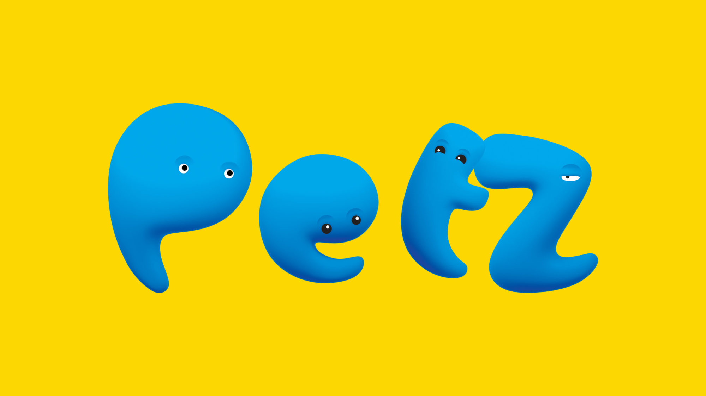

A importância do adestramento em casa
Uma coisa importante, mas ainda pouco falada a respeito do adestramento para
cachorros é que ele não
funciona como algo isolado. Não basta que o tutor reserve uma hora do dia para ensinar o pet a ser
obediente sem se preocupar em mudar os seus hábitos e os do cachorro no restante do tempo.
“A regra geral para o comportamento canino é manter a consistência e uma rotina”, explica a Dra.
Mariana
Sui Sato, médica-veterinária da Petz. Isso significa que, mesmo contratando um adestrador, a maior
parte
do trabalho de educar e de manter o cachorro comportado sempre caberá a você.
Cresce a procura por adestramento de animais
A preocupação com o adestramento dos animais de estimação é algo que nem sempre
passa pela cabeça de
quem compra ou adota um filhote. Assim como educar uma criança demanda tempo e dedicação, ensinar os
bichinhos pode não ser tão fácil como parece, e muitas vezes é necessário a participação de um
especialista.
Mais comum para cães do que para gatos, o adestramento tem tido mais procura, segundo profissionais
da
área. Apesar de existirem diferentes linhas de atuação, um ponto em comum é destacado: a importância
do
envolvimento dos tutores na fase de aprendizado.
Brasil tem mais cachorros de estimação do que crianças, diz pesquisa do IBGE
O cachorro é o melhor amigo do brasileiro em 44,3% dos domicílios, o que
equivale a 28,9 milhões de
lares no país, segundo pesquisa inédita divulgada pelo IBGE. A população de cachorros foi estimada
pelo
instituto em 52,2 milhões, indicando média de 1,8 cachorro por domicílio com esse animal. Já a
população
de gatos foi estimada em cerca de 22 milhões
Os números mostram que, hoje, é possível dizer que o Brasil tem mais cachorros do que crianças, já
que,
segundo dados da Pesquisa Nacional por Amostra de Domicílios (PNAD), de 2013, o país tinha 44,9
milhões
de crianças de 0 a 14 anos.